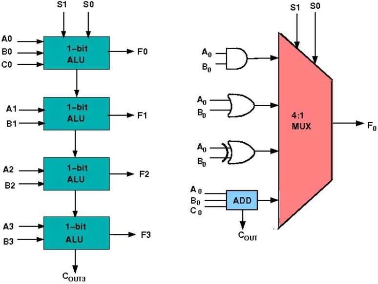
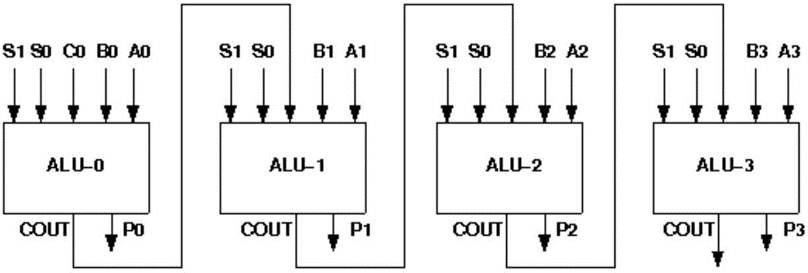
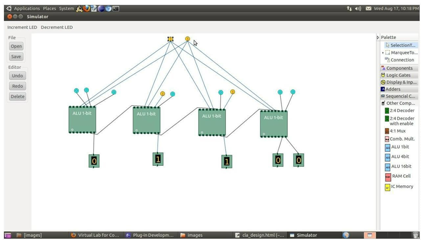

Design & simulate single bit ALU with four functions(AND, OR, XOR, ADD).
| Sr.No. | COMPONENT | SPECIFICATION |
|---|---|---|
| 1. | Software Used | Virtual Lab Simulator |
Design of ALU
ALU or Arithmetic Logical Unit is a digital circuit which performs arithmetic operations like addition, subtraction, division, multiplication and logical oparations like and, or, xor, nand, nor etc. A simple block diagram of a 4 bit ALU for operations and, or, xor and Add is shown here :

The 4-bit ALU block is combined using 4 1-bit ALU block
Design Issues:
The circuit functionality of a 1 bit ALU is shown here, depending upon the control signal S1 and S0 the circuit operates as follows:
for Control signal S1 = 0 , S0 = 0, the output is A And B,
for Control signal S1 = 0 , S0 = 1, the output is A Or B,
for Control signal S1 = 1 , S0 = 0, the output is A Xor B,
for Control signal S1 = 1 , S0 = 1, the output is A Add B.
Objective:
Objective of 4 bit arithmetic logic unit (with AND, OR, XOR, ADD operation):
1. Understanding behaviour of arithmetic logic unit from working module and the module designed by the student as part of the experiment
2. Designing an arithmetic logic unit for given parameter
Examining behaviour of arithmetic logic unit for the working module and module designed by the student as part of the experiment (refer to the circuit diagram):
Loading data in the arithmetic logic unit (refer to procedure tab for further detail and experiment manual for pin numbers):
load the two input numbers as:
A(A3 A2 A1 A0): A3=1, A2=1, A1=0, A0=0
B(B3 B2 B1 B0): B3=1, B2=0, B1=0, B0=1
carry in(C0)=0
1) examining the AND behaviour:
load data in select input as:
S1=0, S0=0
check output:
F3=1, F2=0, F1=0, F0=0
cout=0
2) examining the OR behaviour:
load data in select input as:
S1=0, S0=1
check output:
F3=1, F2=1, F1=0, F0=1
cout=0
3) examining the XOR behaviour:
load data in select input as:
S1=1, S0=0
check output:
F3=0, F2=1, F1=0, F0=1
cout=0
4) examining the ADD behaviour:
load data in select input as:
S1=1, S0=1
check output:
F3=0, F2=1, F1=0, F0=1
cout=1
analysis, error analysis in addition with the input-output behavior. It is recommended to perform the experiments following the given guideline to check behavior and test plans along with their own circuit analysis. Then students are recommended to move on to the advanced stage. The advanced stage includes the accomplishment of the given assignments which will provide deeper understanding of the topic with innovative circuit design experience. At any time, students can mature their knowledge base by further reading the references provided for the experiment.
- color configuration of wire for 5 valued logic supported by the simulator:
- if value is UNKNOWN, wire color= maroon
- if value is TRUE, wire color= blue
- if value is FALSE, wire color= black
- if value is HI IMPEDENCE, wire color= green
- if value is INVALID, wire color= orange
Test plan:
1. Set inputs 0101 and 0011 and check output for all possible select input combinations.
2. Set any two 16-bit number and check output for all possible select input combinations.
Use Display units for checking output. Try to use minimum number of components to build. The pin configuration of the canned components are shown when mouse hovered over a component.
Design of ALU:
To see the step by step process to perform the experiment in simulator follow
Procedure to perform the experiment:Design of 4 bit ALU:
1. Start the simulator as directed.This simulator supports 5-valued logic.
2. To design the circuit we need 4 1-bit ALU, 11 Bit switch (to give input,which will toggle its value with a double click), 5 Bit displays (for seeing output), wires.
3. The pin configuration of a component is shown whenever the mouse is hovered on any canned component of the palette. Pin numbering starts from 1 and from the bottom left corner (indicating with the circle) and increases anticlockwise.
4. For 1-bit ALU input A0 is in pin-9,B0 is in pin-10, C0 is in pin-11 (this is input carry), for selection of operation, S0 is in pin-12, S1 is in pin- 13, output F is in pin-8 and output carry is pin-7.
5. Click on the 1-bit ALU component (in the Other Component drawer in the pallet) and then click on the position of the editor window where you want to add the component (no drag and drop, simple click will serve the purpose), likewise add 3 more 1-bit ALU (from the Other Component drawer in the pallet), 11 Bit switches and 5 Bit Displays (from Display and Input drawer of the pallet,if it is not seen scroll down in the drawer), 3 digital display and 1 bit Displays (from Display and Input drawer of the pallet,if it is not seen scroll down in the drawer).
6. To connect any two components select the Connection menu of Palette, and then click on the Source terminal and click on the target terminal. According to the circuit diagram connect all the components. Connect the Bit switches with the inputs and Bit displays component with the outputs. After the connection is over click the selection tool in the pallete.
7. See the output, in the screenshot diagram we have given the value of S1 S0=11 which will perform add operation and two number input as A0 A1 A2 A3=0010 and B0 B1 B2 B3=0100 so get output F0 F1 F2 F3=0110 as sum and 0 as carry which is indeed an add operation.you can also use many other combination of different values and check the result. The operations are implemented using the truth table for 4 bit ALU given in the theory.
Circuit Diagram:

Screenshot of Design of 4 bit AL:

Follow the below steps
1. Connections were given as per circuit diagram.2. Logical inputs were given as per truth table.
3. Observe the logical output and verify with the truth tables.
Here you can embed an interactive simulation tool or provide links to simulation resources.
- Reference 1: “Digital Fundamentals” by Floyd & Jain
- Reference 2: R. P. Jain, “Modern Digital Electronics”, 3rd Edition, Tata McGraw-Hill
- Reference 3: 3. Malvino, D.Leach“Digital Principles and Applications”, 5th edition, Tata McGraw- Hill